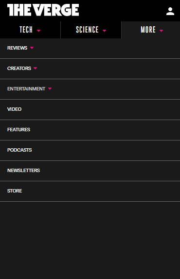

Visual hierarchy
Steam - Valve
https://store.steampowered.com/With over than 34,000 games, soundtracks, and films, it would be easy for anyone to feel dizzy on entering the largest digital distribution platform for PC gaming - but that's not the case. The principle of ordering things differently was clearly used here: right when you enter, the biggest picture shows one of the best games in the moment - maybe the one all your friends are talking about and the one who made you access that website -, then with a similar size, but way down, there are pictures of other games you may be interested, hinting that there are way more than those. Buttons for the menu and website browsing are way smaller as the company wants you to click on games rather than just to look for them.
Fitts' Law
Samsung
https://www.samsung.com/us/In this example, the South Korean multinational has a very simple and clean design (and very white) that has a black button central to the screen, creating a contrast and drawing attention to it. Their biggest goal is for you and me to “Buy” their products “now”, which explains why they decided to use the principle of making it the target area of the webpage, drawing way more attention to it than any other button.
Hick's Law
The Verge
https://www.theverge.com/ The news-oriented website operated by Vox Media does an amazing job minimizing choices for the user - even better on smaller screens than it does on my PC for example. Theirs scope of media must be enormous, as they frequently news, reviews, podcasts and guidebooks on different subjects, but their idea of dividing it in sections could drastically enhance the user experience as there will be less options (that may expand when you click for a more refined search) at a time to get you to the desired place.